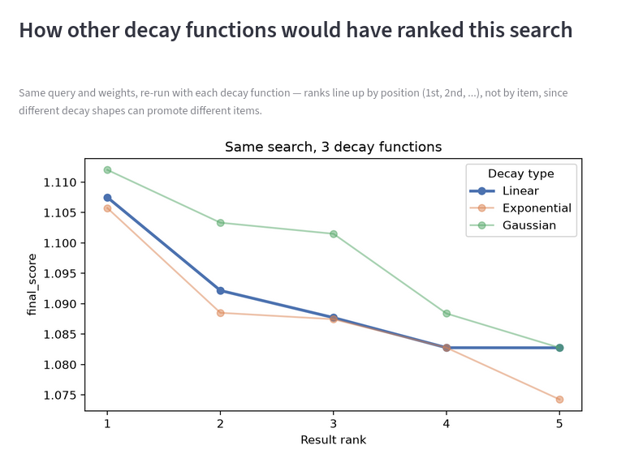

Five things that go wrong before this feels obvious.
Nothing here is exotic — but each one is an easy way to quietly break a ranking formula that looks correct on paper.
01Don't let one signal dominate by accident
The slider demo in Scene 04 makes this visible on purpose: push one weight high enough and it swamps everything else, including the similarity score that made the candidate relevant in the first place. The formula doesn't complain — it just quietly stops being a semantic search. Sanity-check the relative size of each term's contribution, not just its weight.
02Think about scale before you think about weight
A weight only means what you think it means if the underlying field is already on a sane scale. A raw purchase count and a cosine similarity are not comparable numbers — normalise first, weight second. Skipping this step is the single most common way a "0.1 weight" ends up dominating the score anyway.
03Prefer simple formulas
An additive sum of two or three normalised terms is easy to reason about, easy to explain to a stakeholder, and easy to debug when a ranking looks wrong. Nested conditionals and multiplicative terms compound quickly — each added term multiplies the number of interactions you have to reason about, not just adds to it.
04Actually test the effect of changing weights
A formula that looks reasonable in isolation can still produce a ranking nobody would choose. Run the same query through a few weight configurations — or a few decay shapes, as in the comparison chart from the demo app — and look at how the actual top results move, not just the numbers.

05Keep retrieval and ranking conceptually separate
Even though they run in one query, treat them as two different jobs while you're building: retrieval decides who's in the room, ranking decides who speaks first. Debugging is much easier when you can ask "is this a bad candidate, or a badly ranked good candidate?" as two separate questions instead of one tangled one.